plot_crisk creates visualizations of cumulative risks.
plot_crisk(
x,
y = NULL,
x_from = NA,
x_to = NA,
fit_curve = FALSE,
show_pas = FALSE,
show_rem = FALSE,
show_pop = FALSE,
show_aux = FALSE,
show_num = FALSE,
show_inc = FALSE,
show_grid = FALSE,
col_pal = pal_crisk,
arr_c = -3,
main = txt$scen_lbl,
sub = "type",
title_lbl = NULL,
x_lbl = "Age (in years)",
y_lbl = "Population risk",
y2_lbl = "",
mar_notes = FALSE,
...
)Data or values of an x-dimension on which risk is expressed
(required).
If x but not y is provided,
xy.coords from grDevices
is used to determine x- and y-values.
Values of cumulative risks on a y-dimension
(optional, if x is an appropriate structure),
as monotonically increasing percentage values
(ranging from 0 to 100).
Default: y = NULL.
Start value of risk increment.
Default: x_from = NA.
End value of risk increment.
Default: x_to = NA.
Boolean: Fit a curve to x-y-data?
Default: fit_curve = FALSE.
Boolean: Show past/passed risk?
Default: show_pas = FALSE.
Boolean: Show remaining risk?
Default: show_rem = FALSE.
Boolean: Show population partitions?
Default: show_pop = FALSE.
Boolean: Show auxiliary elements
(i.e., explanatory lines, points, and labels)?
Default: show_aux = FALSE.
Boolean: Show numeric values,
provided that show_aux = TRUE.
Default: show_num = FALSE.
Boolean: Show risk increments?
Default: show_inc = FALSE.
Boolean: Show grid lines?
Default: show_grid = FALSE.
Color palette (as a named vector).
Default: col_pal = pal_crisk.
Arrow code for symbols at ends of population links
(as a numeric value -3 <= arr_c <= +6),
with the following options:
-1 to -3: points at one/other/both end/s;
0: no symbols;
+1 to +3: V-arrow at one/other/both end/s;
+4 to +6: T-arrow at one/other/both end/s.
Default: arr_c = -3 (points at both ends).
Text label for main plot title.
Default: main = txt$scen_lbl.
Text label for plot subtitle (on 2nd line).
Default: sub = "type" shows information on current plot type.
Deprecated text label for current plot title.
Replaced by main.
Text label of x-axis (at bottom).
Default: x_lbl = "Age (in years)".
Text label of y-axis (on left).
Default: y_lbl = "Population risk".
Text label of 2nd y-axis (on right).
Default: y2_lbl = "" (formerly "Remaining risk").
Boolean option for showing margin notes.
Default: mar_notes = FALSE.
Other (graphical) parameters.
Nothing (NULL).
plot_crisk assumes data inputs x and y
that correspond to each other so that y is a
(monotonically increasing) probability density function
(over cumulative risk amounts represented by y
as a function of x).
Inputs to x and y must typically be of the same length.
If x but not y is provided,
xy.coords from grDevices
is used to determine x- and y-values.
The risk events quantified by the cumulative risk values in y
are assumed to be uni-directional, non-reversible, and
expressed as percentages (ranging from 0 to 100).
Thus, an element in the population can only switch its status once
(from 'unaffected' to 'affected' by the risk factor).
A cumulative risk increment is computed for
an interval ranging from x_from to x_to.
If risk values for x_from or x_to are not provided
(i.e., in x and y),
a curve is fitted to predict y by x
(by fit_curve = TRUE).
Note that naive interpretations allow for both overestimation (e.g., reading off population values) and underestimation (e.g., reading off future risk increases without re-scaling to remaining population).
For instructional purposes, plot_crisk provides
options for showing/hiding various elements required
for computing or comprehending cumulative risk increments.
Color information is based on a vector with named
colors col_pal = pal_crisk.
pal_crisk corresponding color palette.
Other visualization functions:
plot.riskyr(),
plot_area(),
plot_bar(),
plot_curve(),
plot_fnet(),
plot_icons(),
plot_mosaic(),
plot_plane(),
plot_prism(),
plot_tab(),
plot_tree()
# Data:
x <- seq(0, 100, by = 10)
y <- c(0, 0, 0, 8, 24, 50, 70, 80, 83, 85, 85)
# Basic versions:
plot_crisk(x, y) # using data provided
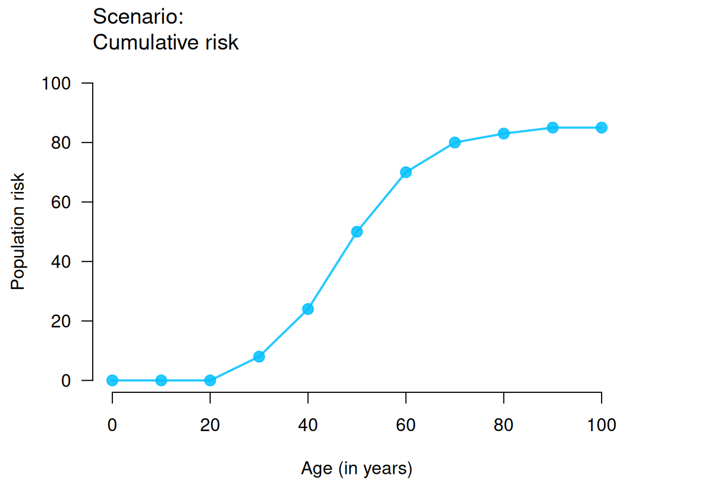
plot_crisk(x, y, x_from = 40) # use and mark 1 provided point
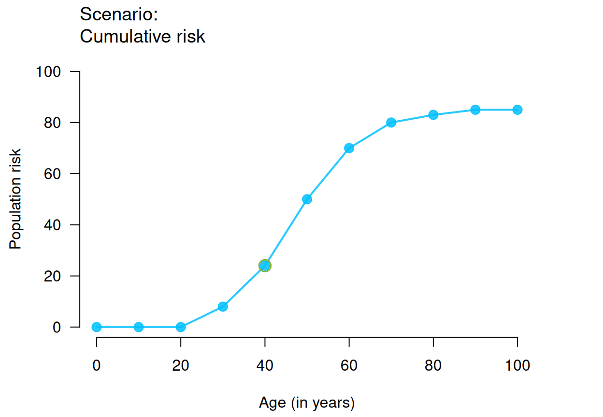
plot_crisk(x, y, x_from = 44) # use and mark 1 predicted point
#> plot_crisk: x_from is not in x: Using fit_curve = TRUE.
plot_crisk(x, y, x_from = 40, x_to = 60) # use 2 provided points
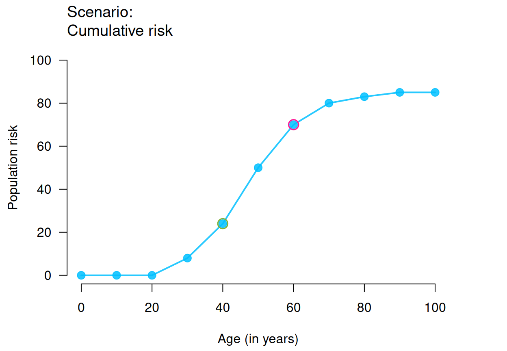
plot_crisk(x, y, x_from = 44, x_to = 64) # use 2 predicted points
#> plot_crisk: x_from is not in x: Using fit_curve = TRUE.
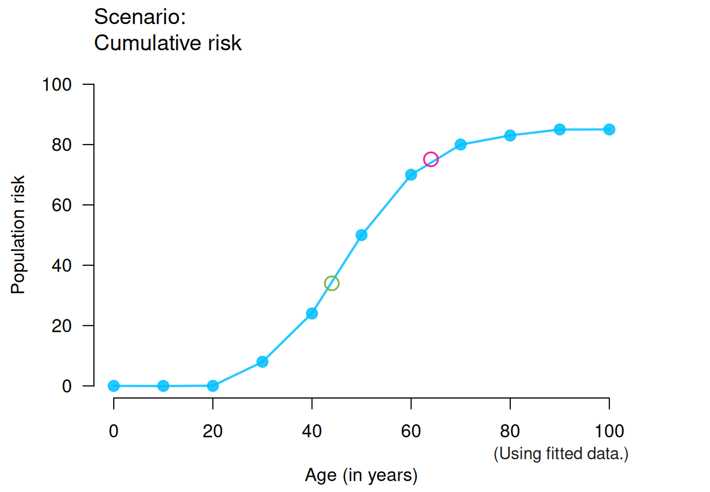
plot_crisk(x, y, fit_curve = TRUE) # fitting curve to provided data
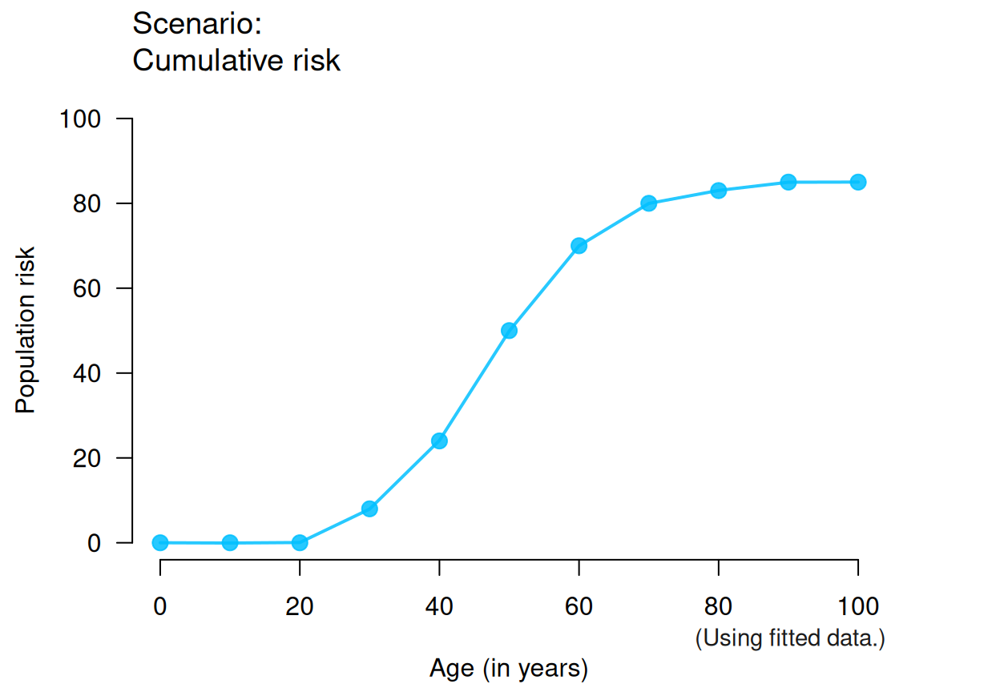
# Training versions:
plot_crisk(x, y, 44, 64, show_pas = TRUE) # past/passed risk only
#> plot_crisk: x_from is not in x: Using fit_curve = TRUE.
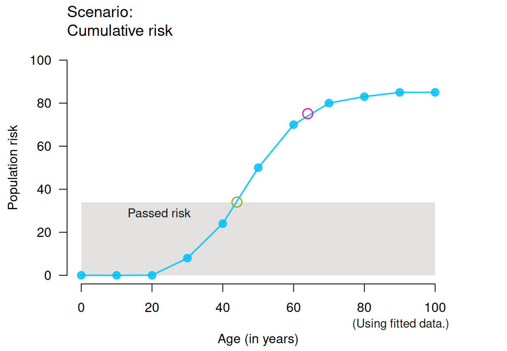
plot_crisk(x, y, 44, 64, show_rem = TRUE) # remaining risk only
#> plot_crisk: x_from is not in x: Using fit_curve = TRUE.
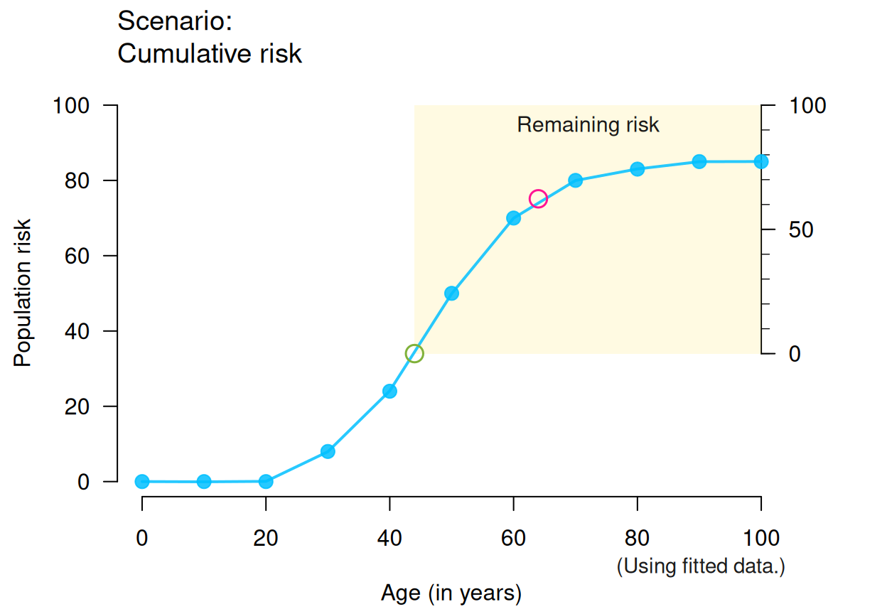
plot_crisk(x, y, 44, 64, show_pas = TRUE, show_rem = TRUE) # both risks
#> plot_crisk: x_from is not in x: Using fit_curve = TRUE.
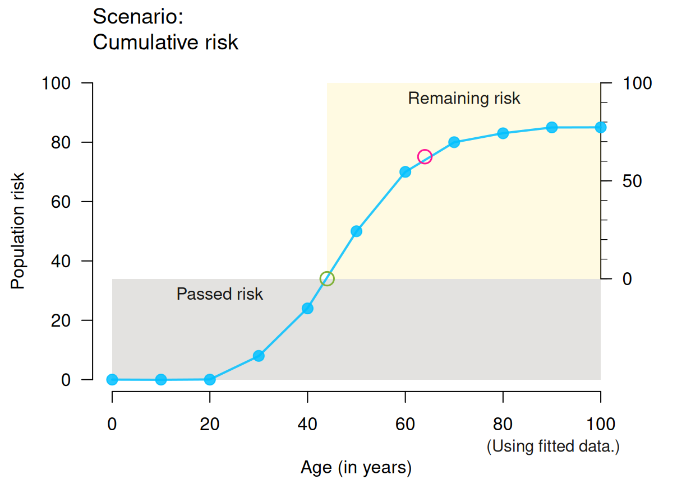
plot_crisk(x, y, 44, 64, show_aux = TRUE) # auxiliary lines + axis
#> plot_crisk: x_from is not in x: Using fit_curve = TRUE.
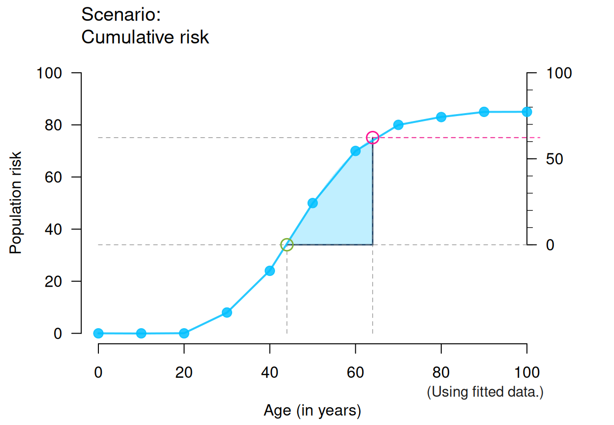
plot_crisk(x, y, 44, 64, show_aux = TRUE, show_pop = TRUE) # + population parts
#> plot_crisk: x_from is not in x: Using fit_curve = TRUE.
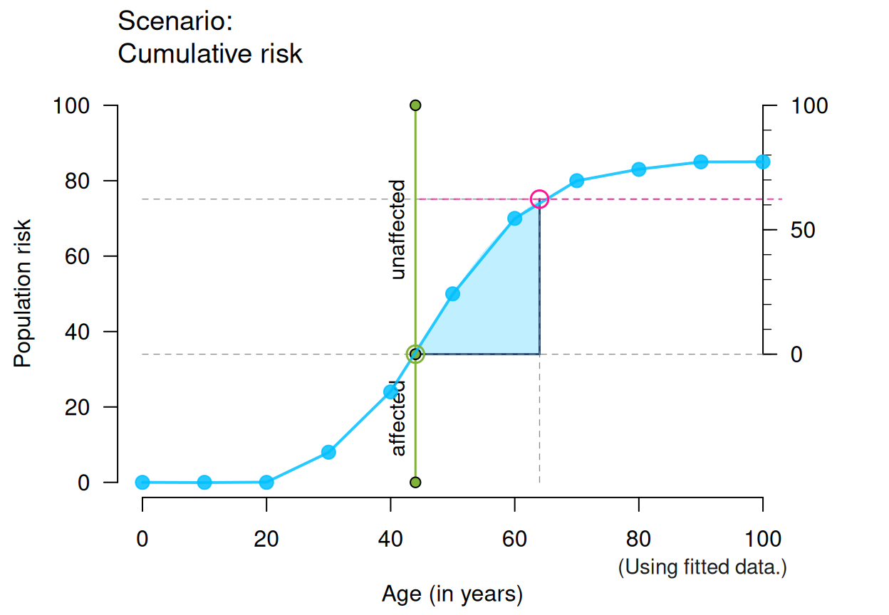
plot_crisk(x, y, 44, 64, show_aux = TRUE, show_num = TRUE) # + numeric values
#> plot_crisk: x_from is not in x: Using fit_curve = TRUE.
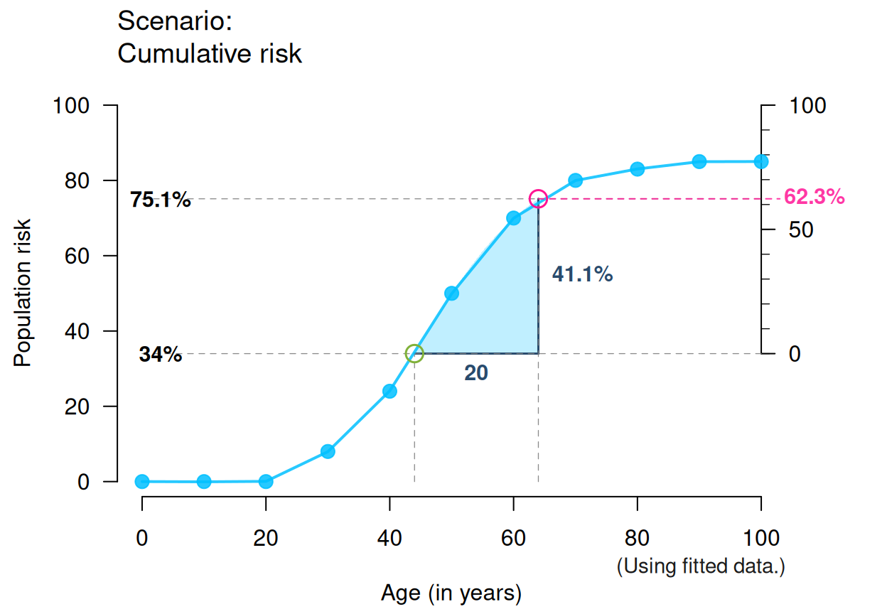
plot_crisk(x, y, 44, 85, show_aux = TRUE, show_pop = TRUE, show_num = TRUE) # + aux/pop/num
#> plot_crisk: x_from is not in x: Using fit_curve = TRUE.
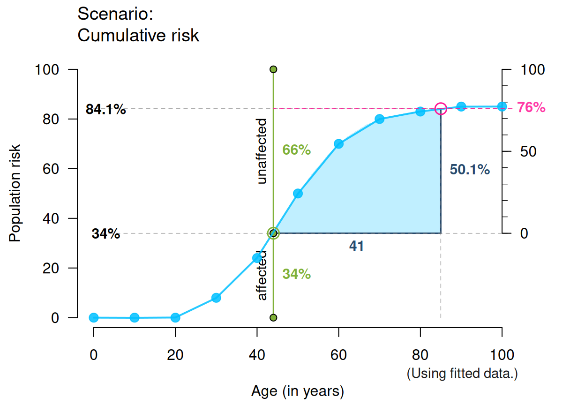
# Note: Showing ALL is likely to overplot/overwhelm:
plot_crisk(x, y, x_from = 47, x_to = 67, fit_curve = TRUE,
main = "The main title", sub = "Some subtitle",
show_pas = TRUE, show_rem = TRUE, show_aux = TRUE, show_pop = TRUE,
show_num = TRUE, show_inc = TRUE, show_grid = TRUE, mar_notes = TRUE)
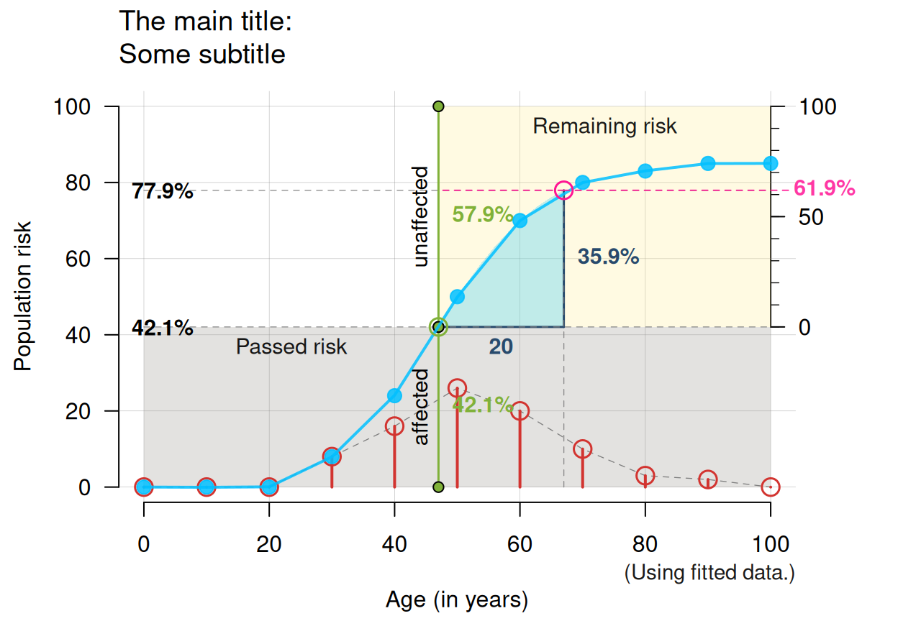
# Small x- and y-values and linear increases:
plot_crisk(x = 2:10, y = seq(12, 28, by = 2), x_from = 4.5, x_to = 8.5,
show_pas = TRUE, show_rem = TRUE, show_aux = TRUE, show_pop = TRUE,
show_num = TRUE, show_inc = TRUE)
#> plot_crisk: x_from is not in x: Using fit_curve = TRUE.
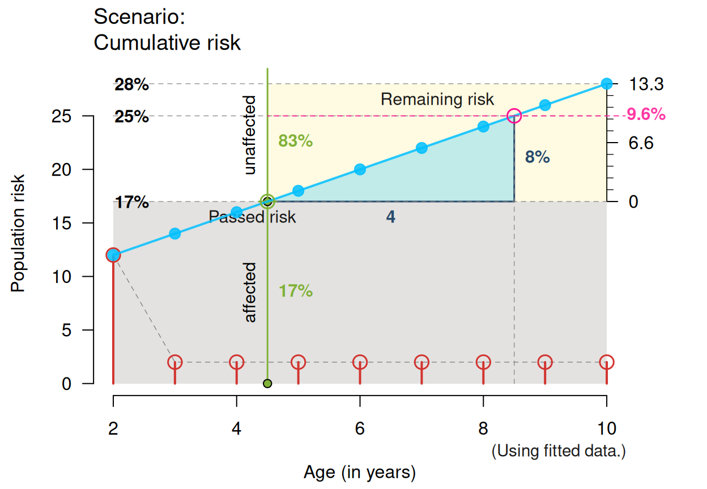